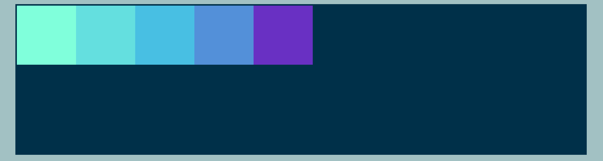
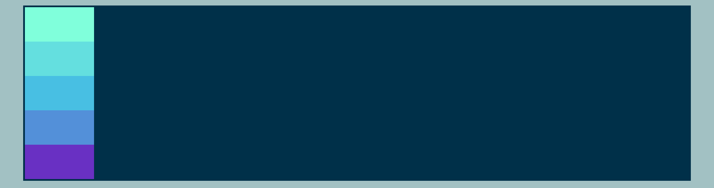
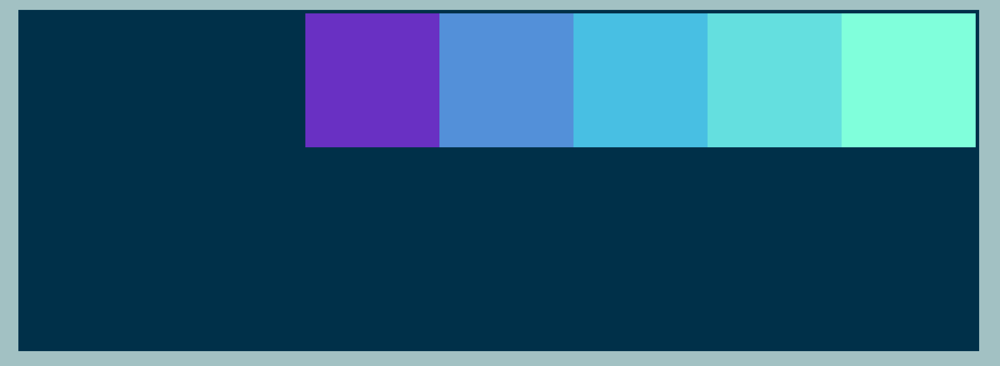
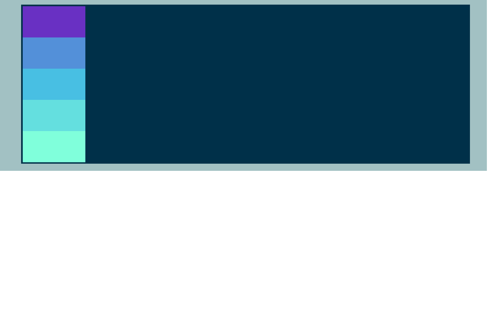

In the Flex model, we have a main-axis which initially goes from left
to right, and a
cross axis which intially goes from top to bottom.
The flex-direction property determines the direction in which the flex items are laid
out within a flex container. By default, flex items are laid out in a row from left to
right.
However, you can use flex-direction to change the direction to a column from top to
bottom,
or to make rows that are reversed from right to left or bottom to top.
Essentially, flex-direction sets the direction in which flex items are laid out along
the
main axis.
Advantages of using flex-direction
It allows you to easily control the layout of items within a container in a flexible and responsive
way.
It allows you to easily align items along a main axis (horizontally or vertically) and a cross axis
(perpendicular to the main axis).
It simplifies the process of creating layouts that work on different screen sizes and devices.
Changing the Flex Model
To use the flex-direction property, you can add it to
your
CSS code like so:

flex-direction: row;essentially, this lays out items from left
to
right.
We can adjust the code in 3 other ways:

flex-direction: column;this arranges our divs from top to
bottom.
#container {
display: flex;
flex-direction: column;
/* change direction to a column from top to bottom */
}

flex-direction: row-reverse;this sets our divs in reverse
order along the main-axis
#container {
display: flex;
flex-direction: row-reverse;
/* change direction to a row from right to left */
}

flex-direction: column-reverse;lays out things in a column
from bottom to top
#container {
display: flex;
flex-direction: column-reverse;
/* change direction to a column from bottom to top */
}
justify-content
The Flexbox property justify-content is used to align flex items along the main axis of
a
flex container. It can be set to
flex-start, center, flex-end,
space-between,
space-around, or space-evenly.
The justify-content property is used to align flex items along the main
axis of a flex container. Later, you'll see that a property called align-items, which
is used to align items along the cross-axis. In either case, the main axis could be the
horizontal
(x-axis) or vertical (y-axis)
axis: it depends on the flex-direction value!
Pros and cons of utilizing justify-content:
Allows for easy alignment of flex items along the main axis of a flex container.
Can be used to create visually pleasing and organized layouts.
Can be used in combination with other Flexbox properties, such as align-items and
align-content, to
create more complex layouts.
However, alignment options may be unsuitable for all types of layouts.
Justifying The Content
With justify-content, the property combines with flex-direction to
switch the position of elements within a container. The default value for this property looks like
this:
justify-content:flex-start;
There are six values associated with justify-content:
flex-start is the default. This dictates that the flex items are aligned to the
start of the main axis within a flex container. This means that the items will
be
aligned
to the left if the flex-direction is set to "row" or to the
top
if the flex-direction is set to column.
justify-content:flex-start; means that the items
will remain in the same direction as the main axis dictated by the
flex-direction
property.
justify-content:center simply does centering of the content around the main
axis.
However, it's easiest to visualize how this works with the image below. Here, we will
demonstrate
how
justify-content:center
works alongside the various flex-direction properties. For simplicity, the
default
of
flex-direction:row; is used first, but look at the other possibilities for
combinining flex-direction with justify-content:center;
space-between evenly distributes space between the elements.
If no
border is set,
the elements push themselves to the furthest points either side of the main axis.
space-around gives even spacing around each element on the
main
axis, but usually gives a 'half-space' on the far ends of the axis, while the spaces between
elements is a 'full space'.
space-evenly basically puts space around each element on the main-axis, but
does so
in a way that means the space around each element in the container is perfectly equal!